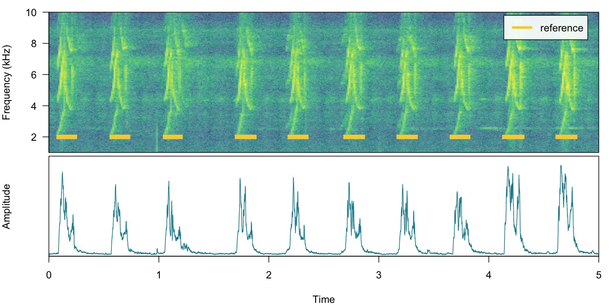
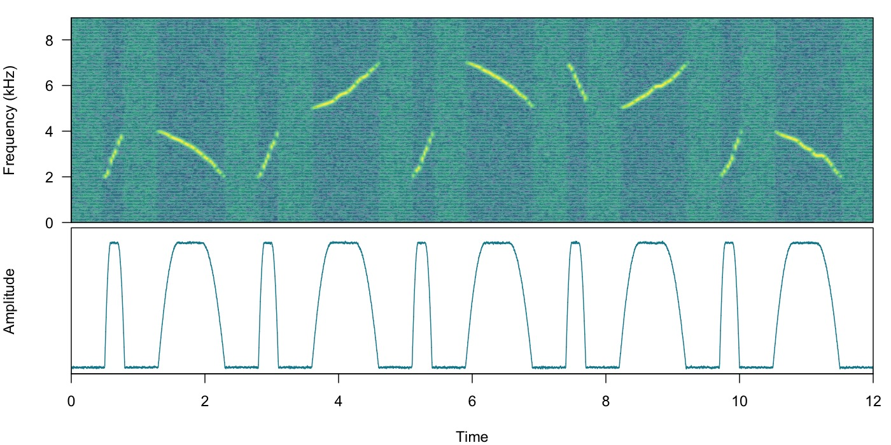
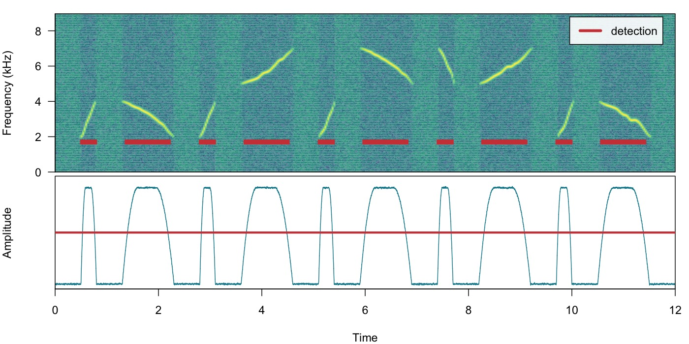
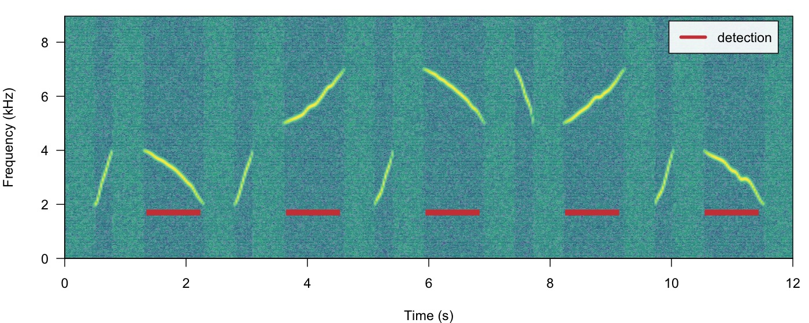
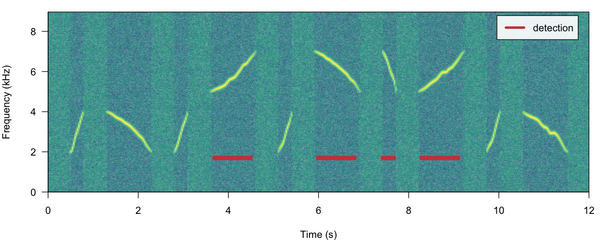
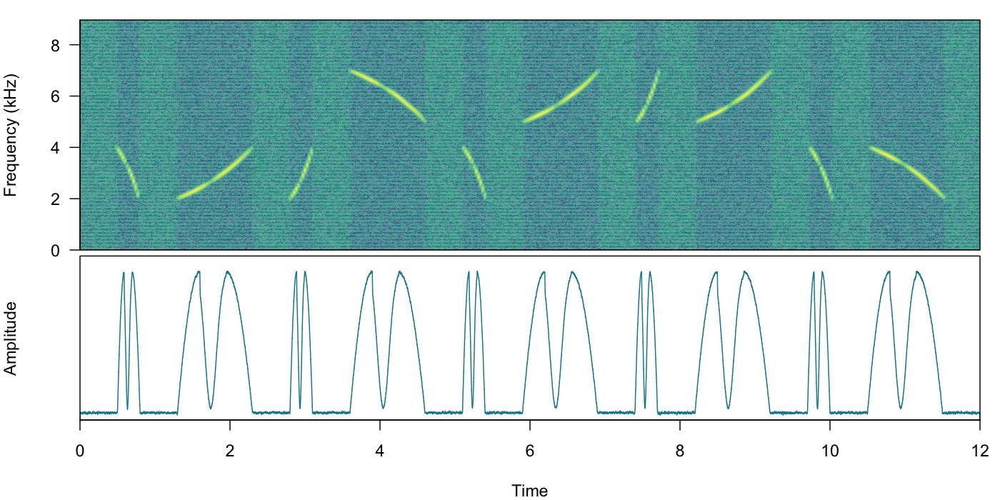

Energy-based detection
Marcelo Araya-Salas, PhD
2025-07-30
Source:vignettes/energy_based_detection.Rmd
energy_based_detection.RmdThis vignette details the use of energy-based detection in ohun. The energy detector approach uses amplitude envelopes to infer the position of sound events. Amplitude envelopes are representations of the variation in energy through time. This type of detector doesn’t require highly stereotyped sound events, although they work better on high quality recordings in which the amplitude of target sound events is higher than the background noise (i.e. high signal-to-noise ratio):
First, we need to install the package. It can be installed from CRAN as follows:
# From CRAN would be
install.packages("ohun")
#load package
library(ohun)To install the latest developmental version from github you will need the R package remotes:
# install package
remotes::install_github("maRce10/ohun")
#load packages
library(ohun)
library(tuneR)
library(warbleR)The package comes with an example reference table containing annotations of long-billed hermit hummingbird songs from two sound files (also supplied as example data: ‘lbh1’ and ‘lbh2’), which will be used in this vignette. The example data can be load and explored as follows:
# load example data
data("lbh1", "lbh2", "lbh_reference")
# save sound files
tuneR::writeWave(lbh1, file.path(tempdir(), "lbh1.wav"))
tuneR::writeWave(lbh2, file.path(tempdir(), "lbh2.wav"))
# select a subset of the data
lbh1_reference <-
lbh_reference[lbh_reference$sound.files == "lbh1.wav",]
# print data
lbh1_reference
[30mObject of class
[1m'selection_table'
[22m
[39m
[90m* The output of the following call:
[39m
[90m
[3m`[.selection_table`(X = lbh_reference, i = lbh_reference$sound.files ==
[23m
[39m
[90m
[3m"lbh1.wav")
[23m
[39m
[90m
[1m
Contains:
[22m
* A selection table data frame with 10 rows and 6 columns:
[39m
[90m| |sound.files | selec| start| end| bottom.freq| top.freq|
[39m
[90m|:--|:-----------|-----:|------:|------:|-----------:|--------:|
[39m
[90m|10 |lbh1.wav | 10| 0.0881| 0.2360| 1.9824| 8.4861|
[39m
[90m|11 |lbh1.wav | 11| 0.5723| 0.7202| 2.0520| 9.5295|
[39m
[90m|12 |lbh1.wav | 12| 1.0564| 1.1973| 2.0868| 8.4861|
[39m
[90m|13 |lbh1.wav | 13| 1.7113| 1.8680| 1.9824| 8.5905|
[39m
[90m|14 |lbh1.wav | 14| 2.1902| 2.3417| 2.0520| 8.5209|
[39m
[90m|15 |lbh1.wav | 15| 2.6971| 2.8538| 1.9824| 9.2513|
[39m
[90m... and 4 more row(s)
[39m
[90m
* A data frame (check.results) with 10 rows generated by check_sels() (as an attribute)
[39m
[90mcreated by warbleR < 1.1.21
[39mWe can plot the annotations on top of the spectrogram and amplitude envelope to further explore the data (this function only plots one wave object at the time, not really useful for long files):
# print spectrogram
label_spectro(wave = lbh1, reference = lbh1_reference, hop.size = 10, ovlp = 50, flim = c(1, 10), envelope = TRUE)
How it works
The function ernergy_detector() performs this type of
detection. We can understand how to use ernergy_detector()
using simulated sound events. We will do that using the function
simulate_songs() from warbleR. In this
example we simulate a recording with 10 sounds with two different
frequency ranges and durations:
# install this package first if not installed
# install.packages("Sim.DiffProc")
#Creating vector for duration
durs <- rep(c(0.3, 1), 5)
set.seed(123)
freqs <- sample(c(3, 6), 10, replace = TRUE)
#Creating simulated song
set.seed(12)
simulated_1 <-
warbleR::simulate_songs(
n = 10,
durs = durs,
freqs = freqs,
sig2 = 0.1,
gaps = 0.5,
harms = 1,
bgn = 0.1,
freq.range = 2,
path = tempdir(),
file.name = "simulated_1",
selec.table = TRUE,
shape = "cos",
fin = 0.3,
fout = 0.35,
samp.rate = 18
)$waveThe function call saves a ‘.wav’ sound file in a temporary directory
(tempdir()) and also returns a wave object in
the R environment. This outputs will be used to run energy-based
detection and creating plots, respectively. This is how the spectrogram
and amplitude envelope of the simulated recording look like:
# plot spectrogram and envelope
label_spectro(wave = simulated_1,
env = TRUE,
fastdisp = TRUE)
Note that the amplitude envelope shows a high signal-to-noise ratio
of the sound events, which is ideal for energy-based detection. This can
be conducted using ernergy_detector() as follows:
# run detection
detection <-
energy_detector(
files = "simulated_1.wav",
bp = c(2, 8),
threshold = 50,
smooth = 150,
path = tempdir()
)
[30mdetecting sound events (step 0 of 0):
[39m
# plot spectrogram and envelope
label_spectro(
wave = simulated_1,
envelope = TRUE,
detection = detection,
threshold = 50
)
The output is a selection table:
detection
[30mObject of class
[1m'selection_table'
[22m
[39m
[90m* The output of the following call:
[39m
[90m
[3menergy_detector(files = "simulated_1.wav", path = tempdir(),
[23m
[39m
[90m
[3mbp = c(2, 8), smooth = 150, threshold = 50)
[23m
[39m
[90m
[1m
Contains:
[22m
* A selection table data frame with 10 rows and 5 columns:
[39m
[90m|sound.files | duration| selec| start| end|
[39m
[90m|:---------------|--------:|-----:|------:|------:|
[39m
[90m|simulated_1.wav | 0.2325| 1| 0.5314| 0.7639|
[39m
[90m|simulated_1.wav | 0.7943| 2| 1.3955| 2.1898|
[39m
[90m|simulated_1.wav | 0.2332| 3| 2.8308| 3.0640|
[39m
[90m|simulated_1.wav | 0.7942| 4| 3.6957| 4.4899|
[39m
[90m|simulated_1.wav | 0.2330| 5| 5.1310| 5.3640|
[39m
[90m|simulated_1.wav | 0.7942| 6| 5.9957| 6.7899|
[39m
[90m... and 4 more row(s)
[39m
[90m
* A data frame (check.results) with 10 rows generated by check_sels() (as an attribute)
[39m
[90mcreated by warbleR 1.1.36
[39mNow we will make use of some additional arguments to filter out
specific sound events based on their structural features. For instance
we can use the argument minimum.duration to provide a time
treshold (in ms) to exclude short sound events and keep only the longest
sound events:
# run detection
detection <-
energy_detector(
files = "simulated_1.wav",
bp = c(1, 8),
threshold = 50,
min.duration = 500,
smooth = 150,
path = tempdir()
)
# plot spectrogram
label_spectro(wave = simulated_1, detection = detection)
We can use the argument max.duration (also in ms) to
exclude long sound events and keep the short ones:
# run detection
detection <- energy_detector(files = "simulated_1.wav", bp = c(1, 8), threshold = 50, smooth = 150, max.duration = 500, path = tempdir())
# plot spectrogram
label_spectro(wave = simulated_1, detection = detection)We can also focus the detection on specific frequency ranges using
the argument bp (bandpass). By setting
bp = c(5, 8) only those sound events found within that
frequency range (5-8 kHz) will be detected, which excludes sound events
below 5 kHz:
# Detecting
detection <- energy_detector(files = "simulated_1.wav", bp = c(5, 8), threshold = 50, smooth = 150, path = tempdir())
# plot spectrogram
label_spectro(wave = simulated_1, detection = detection)
The same logic can be applied to detect those sound events found
below 5 kHz. We just need to set the upper bound of the band pass filter
below the range of the higher frequency sound events (for instance
bp = (0, 5)):
# Detect
detection <-
energy_detector(
files = "simulated_1.wav",
bp = c(0, 5),
threshold = 50,
min.duration = 1,
smooth = 150,
path = tempdir()
)
# plot spectrogram
label_spectro(wave = simulated_1, detection = detection)Amplitude modulation (variation in amplitude across a sound event)
can be problematic for detection based on amplitude envelopes. We can
also simulate some amplitude modulation using
warbleR::simulate_songs():
#Creating simulated song
set.seed(12)
#Creating vector for duration
durs <- rep(c(0.3, 1), 5)
# and a frequency vector
set.seed(123)
freqs <- sample(c(3, 6), 10, replace = TRUE)
sim_2 <-
simulate_songs(
n = 10,
durs = durs,
freqs = freqs,
sig2 = 0.01,
gaps = 0.5,
harms = 1,
bgn = 0.1,
freq.range = 2,
path = tempdir(),
file.name = "simulated_2",
selec.table = TRUE,
shape = "cos",
fin = 0.3,
fout = 0.35,
samp.rate = 18,
am.amps = c(1, 2, 3, 2, 0.1, 2, 3, 3, 2, 1)
)
# extract wave object and selection table
simulated_2 <- sim_2$wave
sim2_sel_table <- sim_2$selec.table
# plot spectrogram
label_spectro(wave = simulated_2, envelope = TRUE)
When sound events have strong amplitude modulation they can be split during detection:
# detect sounds
detection <- energy_detector(files = "simulated_2.wav", threshold = 50, path = tempdir())
# plot spectrogram
label_spectro(wave = simulated_2, envelope = TRUE, threshold = 50, detection = detection)There are two arguments that can deal with this:
holdtime and smooth. hold.time
allows to merge split sound events that are found within a given time
range (in ms). This time range should be high enough to merge things
belonging to the same sound event but not too high so it merges
different sound events. For this example a hold.time of 200
ms can do the trick (we know gaps between sound events are ~0.5 s
long):
# detect sounds
detection <-
energy_detector(
files = "simulated_2.wav",
threshold = 50,
min.duration = 1,
path = tempdir(),
hold.time = 200
)
# plot spectrogram
label_spectro(
wave = simulated_2,
envelope = TRUE,
threshold = 50,
detection = detection
)smooth works by merging the amplitude envelope ‘hills’
of the split sound events themselves. It smooths envelopes by applying a
sliding window averaging of amplitude values. It’s given in ms of the
window size. A smooth of 350 ms can merged back split sound
events from our example:
# detect sounds
detection <-
energy_detector(
files = "simulated_2.wav",
threshold = 50,
min.duration = 1,
path = tempdir(),
smooth = 350
)
# plot spectrogram
label_spectro(
wave = simulated_2,
envelope = TRUE,
threshold = 50,
detection = detection,
smooth = 350
)The function has some additional arguments for further filtering
detections (peak.amplitude) and speeding up analysis
(thinning and parallel).
Optimizing energy-based detection
This last example using smooth can be used to showcase
how the tunning parameters can be optimized. As explained above, to do
this we need a reference table that contains the time position of the
target sound events. The function
optimize_energy_detector() can be used finding the optimal
parameter values. We must provide the range of parameter values that
will be evaluated:
optim_detection <-
optimize_energy_detector(
reference = sim2_sel_table,
files = "simulated_2.wav",
threshold = 50,
min.duration = 1,
path = tempdir(),
smooth = c(100, 250, 350)
)3 combinations will be evaluated:
optim_detection[, c(1, 2:5, 7:12, 17:18)] threshold peak.amplitude smooth hold.time min.duration thinning detections
1 50 0 100 0 1 1 20
2 50 0 250 0 1 1 15
3 50 0 350 0 1 1 10
true.positives false.positives false.negatives splits overlap
1 0 20 10 0 NA
2 5 10 5 0 0.5023727
3 10 0 0 0 0.7224533
proportional.duration.true.positives
1 NA
2 0.5023727
3 0.7843797The output contains the combination of parameters used at each
iteration as well as the corresponding diagnose indices. In this case
all combinations generate a good detection (recall & precision = 1).
However, only the routine with the highest smooth (last
row) has no split sound events (‘split.positive’ column). It also shows
a better overlap to the reference sound events (‘overlap’ closer to
1).
In addition, there are two complementary functions for optimizing
energy-based detection routines: summarize_reference() and
merge_overlaps(). summarize_reference() allow
user to get a sense of the time and frequency characteristics of a
reference table. This information can be used to determine the range of
tuning parameter values during optimization. This is the output of the
function applied to lbh_reference:
summarize_reference(reference = lbh_reference, path = tempdir()) min mean max
sel.duration 117.96 142.60 163.73
gap.duration 322.16 396.43 514.08
annotations 9.00 9.50 10.00
duty.cycle 0.24 0.27 0.31
peak.amplitude 73.76 81.58 88.03
bottom.freq 1.81 2.11 2.37
top.freq 8.49 8.82 9.53Features related to selection duration can be used to set the ‘max.duration’ and ‘min.duration’ values, frequency related features can inform banpass values, gap related features inform hold time values and duty cycle can be used to evaluate performance. Peak amplitude can be used to keep only those sound events with the highest intensity, mostly useful for routines in which only a subset of the target sound events present in the recordings is needed.
merge_overlaps() finds time-overlapping selections in
reference tables and collapses them into a single selection. Overlapping
selections would more likely appear as a single amplitude ‘hill’ and
thus would be detected as a single sound event. So
merge_overlaps() can be useful to prepare references in a
format representing a more realistic expectation of how a pefect energy
detection routine would look like.
Please cite ohun like this:
Araya-Salas, M. (2021), ohun: diagnosing and optimizing automated sound event detection. R package version 0.1.0.
References
- Araya-Salas, M., Smith-Vidaurre, G., Chaverri, G., Brenes, J. C., Chirino, F., Elizondo-Calvo, J., & Rico-Guevara, A. (2023). ohun: An R package for diagnosing and optimizing automatic sound event detection. Methods in Ecology and Evolution, 14, 2259–2271. https://doi.org/10.1111/2041-210X.14170
- Araya-Salas M, Smith-Vidaurre G (2017) warbleR: An R package to streamline analysis of animal acoustic signals. Methods in Ecology and Evolution, 8:184-191.
- Knight, E.C., Hannah, K.C., Foley, G.J., Scott, C.D., Brigham, R.M. & Bayne, E. (2017). Recommendations for acoustic recognizer performance assessment with application to five common automated signal recognition programs. Avian Conservation and Ecology,
- Macmillan, N. A., & Creelman, C.D. (2004). Detection theory: A user’s guide. Psychology press.
Session information
R version 4.5.1 (2025-06-13)
Platform: aarch64-apple-darwin20
Running under: macOS Sonoma 14.7.6
Matrix products: default
BLAS: /Library/Frameworks/R.framework/Versions/4.5-arm64/Resources/lib/libRblas.0.dylib
LAPACK: /Library/Frameworks/R.framework/Versions/4.5-arm64/Resources/lib/libRlapack.dylib; LAPACK version 3.12.1
locale:
[1] en_US.UTF-8/en_US.UTF-8/en_US.UTF-8/C/en_US.UTF-8/en_US.UTF-8
time zone: UTC
tzcode source: internal
attached base packages:
[1] stats graphics grDevices utils datasets methods base
other attached packages:
[1] warbleR_1.1.36 NatureSounds_1.0.5 knitr_1.50 seewave_2.2.3
[5] tuneR_1.4.7 ohun_1.0.3
loaded via a namespace (and not attached):
[1] gtable_0.3.6 rjson_0.2.23 xfun_0.52 bslib_0.9.0
[5] ggplot2_3.5.2 vctrs_0.6.5 tools_4.5.1 bitops_1.0-9
[9] curl_6.4.0 parallel_4.5.1 tibble_3.3.0 proxy_0.4-27
[13] pkgconfig_2.0.3 KernSmooth_2.23-26 checkmate_2.3.2 RColorBrewer_1.1-3
[17] desc_1.4.3 lifecycle_1.0.4 compiler_4.5.1 farver_2.1.2
[21] textshaping_1.0.1 brio_1.1.5 htmltools_0.5.8.1 class_7.3-23
[25] sass_0.4.10 RCurl_1.98-1.17 yaml_2.3.10 pkgdown_2.1.3
[29] pillar_1.11.0 jquerylib_0.1.4 MASS_7.3-65 classInt_0.4-11
[33] cachem_1.1.0 viridis_0.6.5 Deriv_4.2.0 digest_0.6.37
[37] sf_1.0-21 fastmap_1.2.0 grid_4.5.1 cli_3.6.5
[41] magrittr_2.0.3 e1071_1.7-16 scales_1.4.0 backports_1.5.0
[45] rmarkdown_2.29 httr_1.4.7 Sim.DiffProc_4.9 signal_1.8-1
[49] igraph_2.1.4 gridExtra_2.3 ragg_1.4.0 pbapply_1.7-4
[53] evaluate_1.0.4 dtw_1.23-1 fftw_1.0-9 testthat_3.2.3
[57] viridisLite_0.4.2 rlang_1.1.6 Rcpp_1.1.0 glue_1.8.0
[61] DBI_1.2.3 jsonlite_2.0.0 R6_2.6.1 systemfonts_1.2.3
[65] fs_1.6.6 units_0.8-7